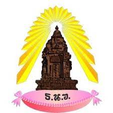
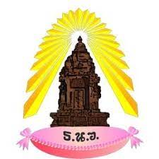

นายยอดชาย สุวาส เลขที่31 ม.5/6
เรียนอยู่ที่ธาตุนารายน์วิทยาครับ
ความสามารถ
- เล่นเกม
งานอดิเรก
- 1.ดูหนัง
- 2.เล่นเกม
เพลงที่ชอบ
ประวัติการศึกษา
 |
โรงเรียนเซนต์ยอแซฟสกลนคร | ปี2550-2564 |
|  | โรงเรียนธาตุนารายฌ์วิทยา | ปี2564-ปัจจุบัน |
เรียนอยู่ที่ธาตุนารายน์วิทยาครับ
|
โรงเรียนเซนต์ยอแซฟสกลนคร | ปี2550-2564 |
|  | โรงเรียนธาตุนารายฌ์วิทยา | ปี2564-ปัจจุบัน |